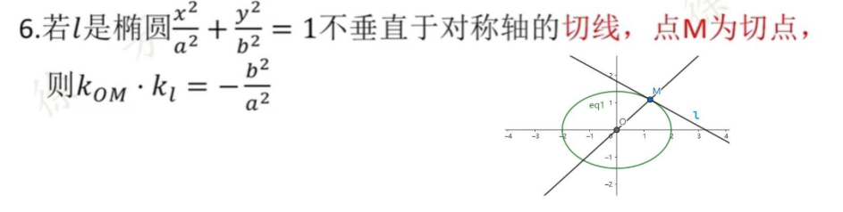
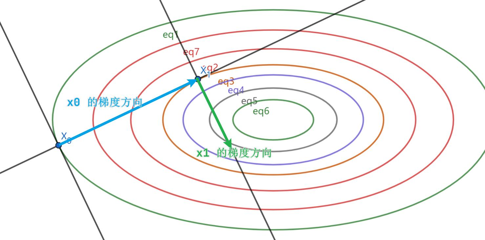
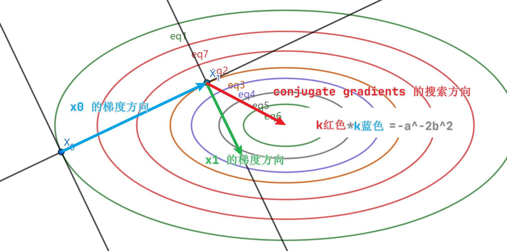

共轭梯度：高中解析几何的拓展
本文没有任何数学推导。我们从直观上理解这个算法，然后直接介绍算法的流程。希望了解数学推导的读者可以查看 CMU 的教案及其翻译。
1. 问题
对于实对称矩阵 $A \in \mathbb{R}^{n \times n}$ 和向量 $b \in \mathbb{R}^n$，求解
$$Ax = b$$或者，等价的，
$$\text{argmin}_x f(x)$$其中
$$f(x) = \frac{1}{2}x^T A x - b^T x$$2. 预备知识
2.1. 从高中学的二级结论说起
高中的时候我们学过椭圆：
$$a^{-2}x^2 + b^{-2}y^2 = 1$$如果你记性好的话，你应该记得这个二级结论：

这是一个从圆里面推广而来的结论：如果 $a = b$，椭圆退化为圆，$k_{OM}k_l = -1$，即 $OM, l$ 两条直线垂直。
2.2. 最速下降法
首先，你应该知道梯度下降法：
$$x_{i+1} = x_i - \alpha\nabla f(x_i)$$最速下降法就是在梯度下降法的基础上，选择 $\alpha$ 使得 $x_{i+1}$ 达到最小（在搜索方向上的最小值）：
$$\alpha^* = \text{argmin}_\alpha f(x_i - \alpha\nabla f(x_i))$$3. 共轭梯度法
3.1. 记号
-
$x_i$：第 $i$ 次循环之后的 $x$ 向量
-
$r_i$：$b_i - Ax_i$，目标函数 $f(x)$ 在 $x_i$ 点的负梯度，或者线性方程组在 $x_i$ 点的残差。
- 请记住：负梯度和残差是一个东西！
-
$d_i$：在 $x_i$ 点的搜索方向。最速下降算法里 $d_i = r_i$，共轭梯度里面需要一点修正。
3.2. 最速下降
-
最速下降的新方向：$r_{i+1}$
- 新方向与前一步下降方向 $r_i$ 垂直（画个等高线图直观理解，或者回想一下"等势面和电场线垂直"）

- 最速下降的 $\alpha$
3.3. 共轭梯度
我们直接逐项类比最速下降。
-
新方向与前一步下降方向 $r_i$ 垂直 斜率之积为 $-a^{-2}b^2$ (Section 2.1)
- 这个方向由最速下降的方向进行一些小改动得到，我们可以在后面的算法部分(Section 3.4)看到。把这个方向从和前一个搜索方向垂直改动到斜率之积为 $-a^{-2}b^2$ 就是 CG 和最速下降唯一不同的地方。

- 步长 $\alpha$：由于是在一条直线上做优化，因此和最速下降的 $\alpha$ 相同。
由于一次迭代只涉及到两个点、两个向量，只能构成一个平面，我们甚至不需要将二维向多维推广。
- 若需推导，我们需要做的只是把点的 $n$ 维坐标映射到二维，然后对截面椭圆对应的二阶二次型进行 SVD 获得其长轴 $a$ 和短轴 $b$，进而根据其离及上述斜率积的二级结论计算两个方向的关系。这里不展开。
3.4. 算法
3.4.1. 初始化
算法输入：$A, b, x_0$
$$\vec{d}_{(0)} = \vec{r}_{(0)} = \vec{b}_{(0)} - \mathbf{A}\vec{x}_{(0)}$$3.4.2. 算法过程
$$\alpha_{(i)} = \frac{\vec{r}_{(i)}^T \vec{r}_{(i)}}{\vec{d}_{(i)}^T \mathbf{A}\vec{d}_{(i)}}$$$$\vec{x}_{(i+1)} = \vec{x}_{(i)} + \alpha_{(i)}\vec{d}_{(i)}$$$$\vec{r}_{(i+1)} = \vec{r}_{(i)} - \alpha_{(i)}\mathbf{A}\vec{d}_{(i)}$$$$\beta_{(i+1)} = \frac{\vec{r}_{(i+1)}^T \vec{r}_{(i+1)}}{\vec{r}_{(i)}^T \vec{r}_{(i)}}$$$$\vec{d}_{(i+1)} = \vec{r}_{(i+1)} + \beta_{(i+1)}\vec{d}_{(i)}$$其中的最后一步就是通过 $\beta$ 将 $r_{i+1}$ 修正成 $d_{i+1}$ 的。
3.4.3. 起讫
-
起：如果你对解 $x$ 有粗略的估计，就使用那个值作为起始点 $x_0$；否则，直接使用 $x_0 = 0$。
-
讫：通常的做法是在残差向量的 2-norm 小于某个给定阈值的时候就停下来。通常这个阈值为初始残差的一小部分
其中 $\varepsilon$ 是一个输入的参数。
3.5. 杂项
- 由于 $Ad_i$ 在每个循环中都要被计算，且
故可以用上式计算 $r_{i+1}$，而不必用 $b - Ax_{i+1}$。
- 上述方法有浮点误差累计的危险，因此我们应该每过几个循环就重新用 $r_i = b - Ax_i$ 重新计算残差。